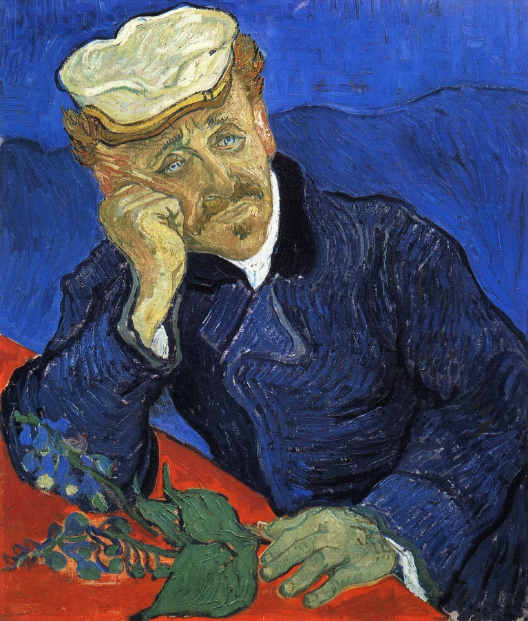
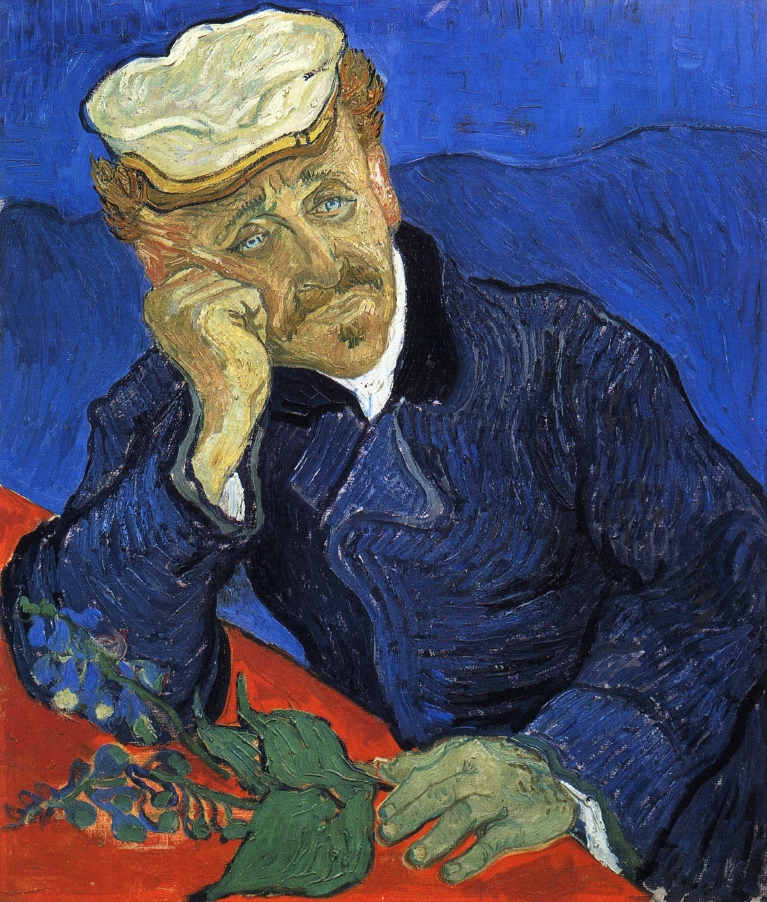

«И́рисы» — картина нидерландского живописца Винсента ван Гога. «Ирисы» были написаны художником в 1889 году — в то время, когда он жил в лечебнице Святого Павла Мавзолийского близ Сен-Реми-де-Прованс, за год до своей смерти.
Автор: Винсент Ван Гог
Размеры: 71 см x 93 см
Тема: Ирис
Местоположение: Музей Гетти
Создание: 1889 г.
Материалы: Масляные краски
Провенанс
Первым владельцем полотна был французский искусствовед и анархист Октав Мирбо, заплативший за полотно 300 франков. В 1987 году «Ирисы» стали самой дорогой картиной, установив рекорд, который продержался на протяжении двух с половиной лет; в то время картина была продана за 53,9 млн долларов Алану Бонду, но у него не было достаточно денег, чтобы завершить сделку. «Ирисы» были перепроданы в 1990 году музею Гетти в Лос-Анджелесе.
Ус Виталий © 2016
г. Днепропетровск
КА "ШАГ"